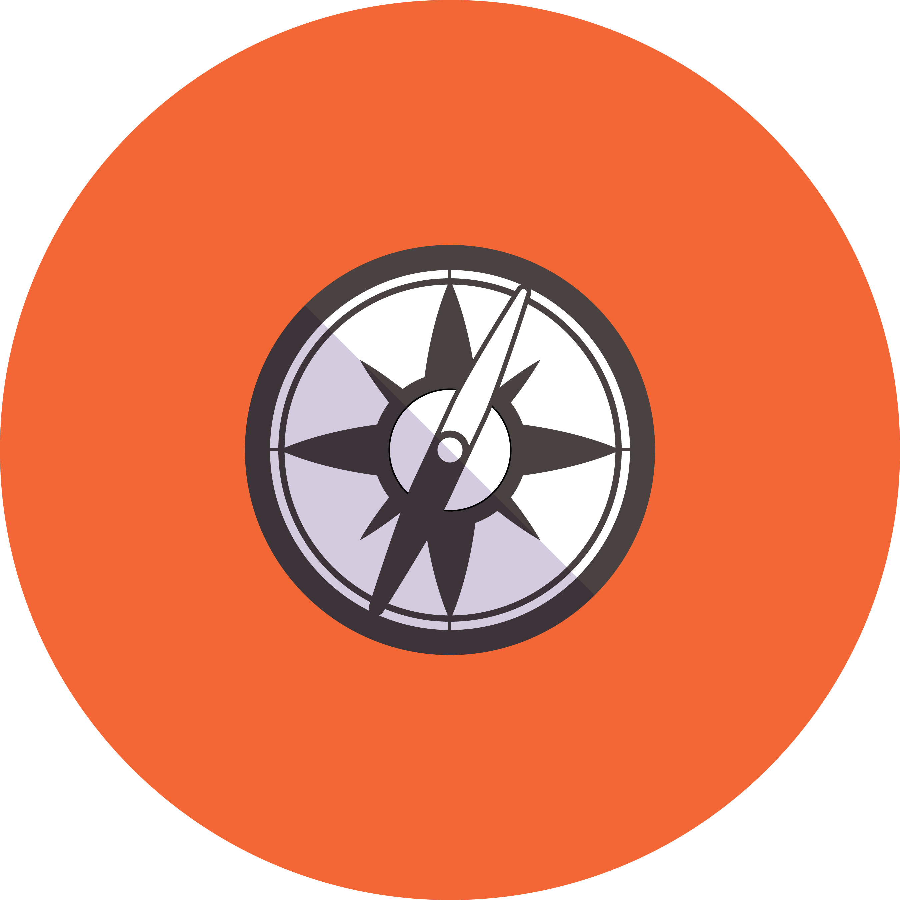
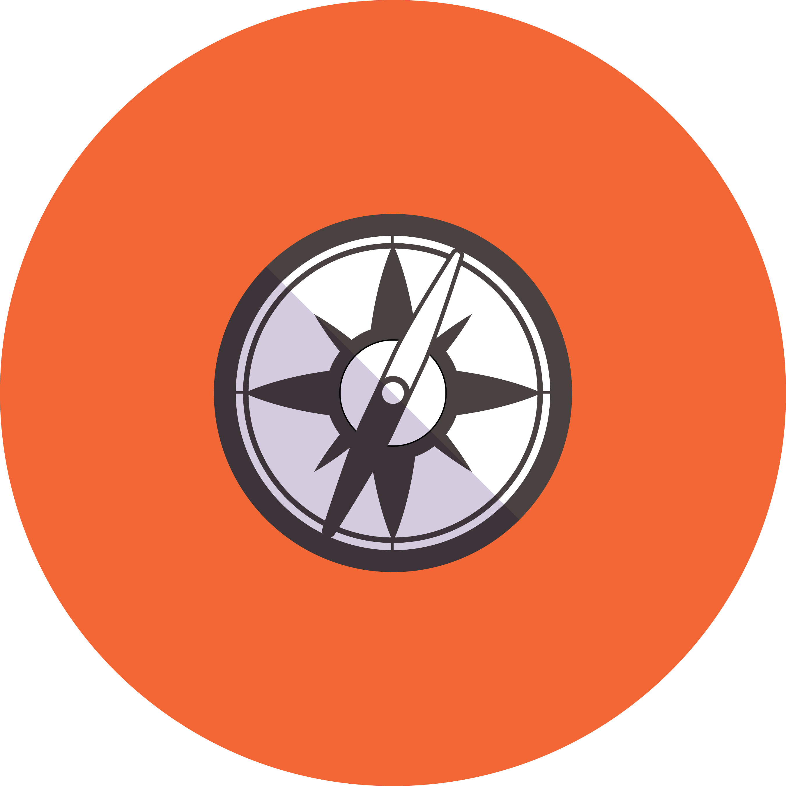
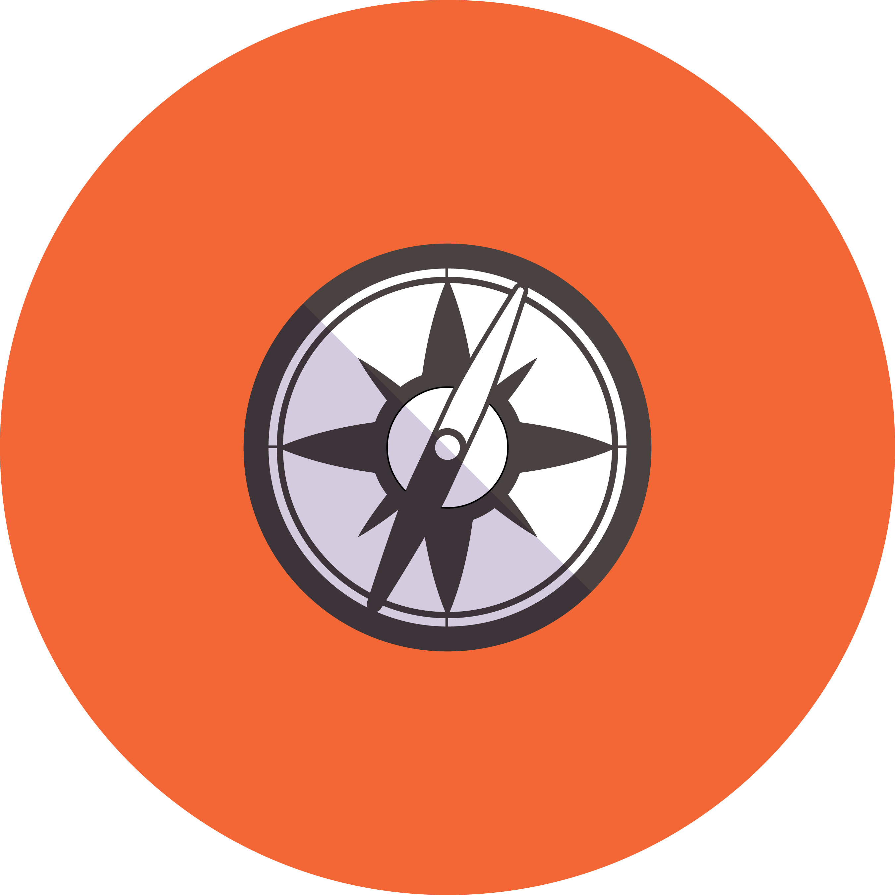
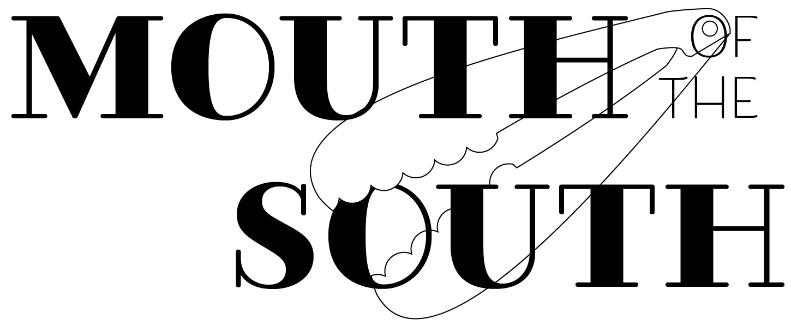
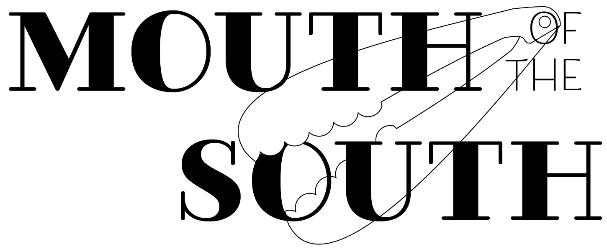

x
 



Gunnin Library

Story icons
My position as digital media intern for the Emery A. Gunnin Architecture Library showcases my ability to manufacture compelling graphics and legibly communicate information while remaining on brand.
Graphic backgrounds for Instagram stories
x
 


Mouth of the South Logo Design
This is a logo design for a catering company in Aiken, SC looking to rebrand. To the left are several possible iterations for the design earlier in the design process.